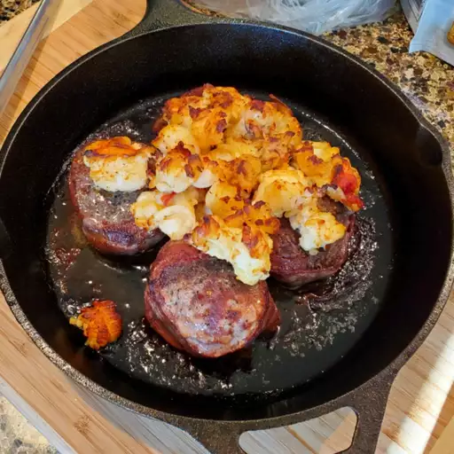

This is my family's favorite Christmas dinner. Elegant for dinner parties or a romantic dinner for two. If you desire crabmeat instead of lobster, go for it!
Set oven to Broil at 500 degrees F (260 degrees C).
Sprinkle tenderloins all over with salt, pepper, and garlic powder. Wrap each filet with bacon, and secure with a toothpick. Place on a broiling pan, and broil to desired doneness, about 8 to 10 minutes per side for medium rare.